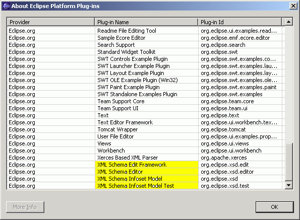
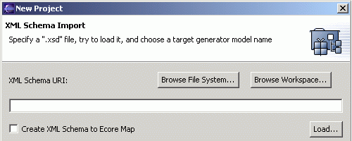
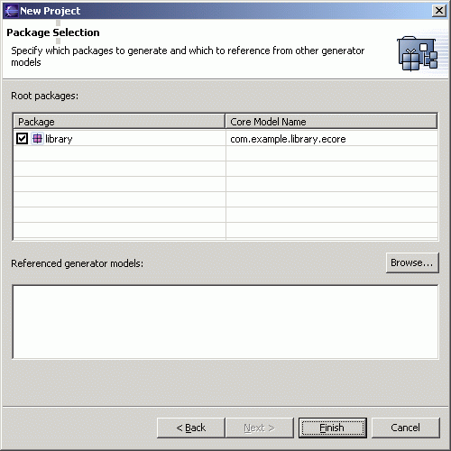
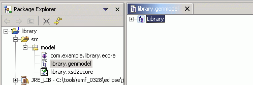
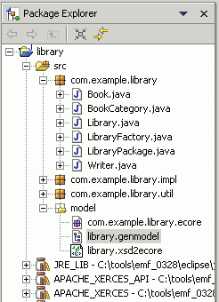
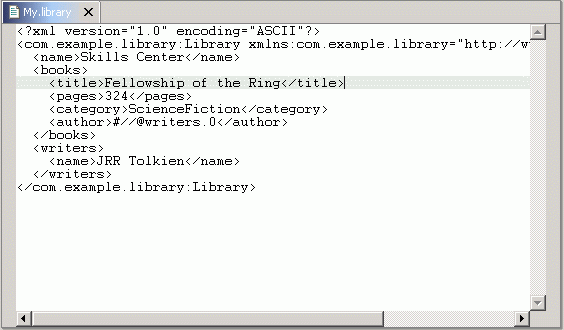

Generating an EMF Model using XML Schema
This tutorial provides a step-by-step description for creating an EMF model
from an XML schema and then generating a simple model editor for it. Completing
this tutorial will enable you to see how easy EMF makes it to go from a simple
model definition in an XML schema to a fully-functioning editor for that model.
The XML schema file we use in this tutorial can be found here:
library.xsd. Save it somewhere on your
workstation for later use.
The mapping rules from XML schema to ECore are:
- Each target namespace of a schema maps to an EPackage.
- A complex type definition or a top level element declaration maps to an EClass.
- A simple type definition maps to an EDataType, except for the types anyURI,
QName, IDREF, or IDREFS, which instead map to the EClass for EObject.
- An attribute declaration or a nested element declaration maps to an EAttribute
if its type maps to an EDataType, or to an EReference if its type maps to an EClass.
From a modeling perspective, an XML schema is not as expressive as ECore. An XML schema
cannot be used to define bi-directional references, nor can it provide the type of
a reference target.
The screenshots are based on version 2.1 of the Eclipse SDK,
version 1.1.0 of EMF and version 1.1.0 of XSD.
Contents
contents
Step 0: Prerequisites
The EMF runtime package includes the EMF generator and a number of
related plugins. And the XML Infoset Model is a reference library that
can examine, create or modify XML Schemas. After installing the EMF runtime package
and XML Infoset Model,
verify that they are available in your Eclipse environment:
- Bring up the "Help/About Eclipse Platform" dialog.

- Click on "Plug-in Details".

- Check that the highlighted plugins are present.


contents
Step 1: Importing the Model from XML Schema
Use the XML Schema file you saved earlier:
library.xsd as a sample model.
Create a new Ecore model project in the workspace:
-
Bring up the "File/New/Project..." dialog.

-
Select "Eclipse Modeling Framework" and "EMF Project". Click the
"Next" button.

-
Give the project a name, say, "library". Then, click the "Next"
button.

-
Select "Load from an XML Schema" and click the "Next" button.

-
Click on the "Browse File System..." or "Browse Workspace..." button to
locate and load the XML schema file on your system. Alternatively, you can
enter the XML schema file's location directly in the "XML Schema URI" entry
field and then click on the "Load..." button to load it. (Note: If you locate
the schema using either "Browse File System..." button or "Brose Workspace..."
button, you do not need to click on the "Load..." button.)

-
After the XML schema file is loaded, a default GenModel name will be suggested.
You can change the name in the "Generator model name" entry field if you wish.
You can also select "Create XML Schema to Ecore Map" to generate a mapping file
that maps from an XML Schema to Ecore, with an extension of ".xsd2ecore". If you
do not select this option, the mapping file is not generated.
Click the "Next" button.

-
Select the package for which you want to generate an EMF model - In general,
there can be many packages within a single schema. However, in this case,
there is only one package, "library". Click the "Finish" button.

-
Three files will be created: (1) A mapping file that maps from an XML Schema to
Ecore, with an extension of ".xsd2ecore", (2) an Ecore model, with an extension of
".ecore", and (3) a GenModel, with an extension of ".genmodel". The GenModel, which
controls code generation for the model appears in the main view.

The Ecore model "com.example.library.ecore" has the package name as its file
name. The package name comes from the value of the EPackage's nsPrefix attribute is
derived from the schema's target namespace (if the schema has a target namespace),
or from the URI file path of the schema document if the schema does not
contain a target namespace. In this sample, the "library.xsd" file includes
a targetNamespace attribute that has a value of "http://www.example.com/library".
Therefore, the nsPrefix attribute for the "Library" is set to "com.example.library".
contents
Step 2: Generating the EMF Model Code
The GenModel shows a root node, representing the whole
model. The model object has children that represent its packages, whose
children then represent classifiers (classes and datatypes, including
enumerated types). The children of classes are class attributes,
references, and operations; the children of enumerated types are enum
literals.
-
The GenModel can be expanded to see its various elements.

-
There are properties associated with each node. If the Properties
view isn't already showing, bring up "Window/Show View/Other..."

-
Expand the "Basic" set of views and choose "Properties".

-
These properties control the behavior of the code generator.

In most cases, the values of the properities need not be changed from their default
values, but these options can provide a great deal of control over the
code that gets generated. This topic will be explored more fully in
future tutorial material; for now, select several different GenModel
objects, and observe their properties.
The GenModel is also the place where you initiate the code generation.
By right-clicking on an object in the model, you can generate code for
it.
-
Right-click the "library" model object and
select "Generate Model Code" from the pop-up menu.

-
Observe the generated files.

After generation, the class interfaces and enum class will have been
created, and a new pair of interfaces will have been created for the package
itself and for the factory. There will also be two new packages, with "impl"
and "util" suffixes, which contain implementations of the interfaces and
additional utility classes, and a "plugin.xml" manifest file for the model plugin.
If you change the XML schema file, you can regenerate the model code from it, and
the corresponding changes in the model code will be merged with any hand modifications
that may have been made to the code that was generated previously. You can also selectively
generate a subset of the model code by right-clicking on a package, class, or enum object and selecting
"Generate Model Code" from the pop-up menu.
contents
Step 3: Generating an Editor for the Model
A fully-functional Eclipse editor can also be generated for any model.
By default, it is split between two plugins: (1) an "edit" plugin, which includes
adapters that provide a structured view and perform command-based editing
of the model objects, and (2) an "editor" plugin, which provides the UI for the editor
and a wizard.
-
In the GenModel, right-click the "Library"
model object and select "Generate Edit Code" from the pop-up menu.

-
Right-click the model object and select "Generate Editor Code" from the
pop-up menu.

-
Observe the generated projects, with "edit" and "editor" suffixes.

In general, if you wish to generate the model, edit, and editor plugins
in a single step, you can do so by selecting "Generate All" from the
pop-up menu.
The code should be compiled automatically as it is generated, and
should recompile whenever it is changed. If you have disabled automatic
building in the workbench preferences, you can initiate compilation
manually:
-
Select "Rebuild All" from the "Project" menu.

-
There should no errors in the "library", "library.edit", and
"library.editor" projects.

contents
Step 4: Running the Generated Editor
In order to run plugins in a runtime workbench, a lunch configuration
must first be set up:
-
Select "Run..." from the "Run" menu.

-
Select "Run-time Workbench" and click the "New" button.

-
You may want to change the configuration's name to something more
recognizable. Then, switch to the "Plug-ins and Fragments" tab.

-
Select "Choose plugin-ins and fragments to launch from the list", and
then select the top-level "External Plug-ins".

-
Switch to the "Common" tab, select "Run" from the "Display in favorites menu" section
of the dialog, and the click the "Apply" button.

A runtime workbench can be launched from the "Launch Configurations"
dialog by clicking on the "Run" button. Once the launch configuration
has been set up, it can also be launched from the "Run" button on the
toolbar.
-
Select the new launch configuration from the "Run" button drop-down.

-
Wait for a second instance of the Eclipse platform to come up. Bring
up the "Help/About Eclipse Platform" dialog, click on the "Plug-in
Details" button, and verify that the generated plugins are there.

The library model wizard can now be used to create a new instance of
the model.
-
Working in the Resource perspective, Bring up the "File/New/Project..." dialog.
-
Select "Simple" and "Project". Click the "Next" button.

-
Give the project a name and click the "Finish" button.

-
Right-click the project and select "New/Other..." from the pop-up menu.

-
Select "Example EMF Model Creation Wizards" and "Library Model". Click
the "Next" button.

-
Enter a file name for the library model. Make sure it ends with a
".library" extension. Then click the "Next" button.

-
Select "Library" as the model object, and click the "Finish" button.

-
The newly created library model is opened in the main view.

The root object in this editor corresponds to the "My.library" resource.
Under it lies a single library, the object that was selected as the model
object in the wizard.
-
Expand the "platform:/resource/librarytest/My.library" resource to see
the library object. Select it.

-
In the Properties view, click on the "Value" column of the "Name"
property, and give a name to the library. The label in the main
view will be updated when you hit Enter.

-
Right-click on the library and select "New Child/Writer" from the
pop-up menu to add a new writer to the library.

-
Enter the name of the writer in the Properties view.

-
Similarly, a book can be added to the library.

-
All the book's attributes and references can be edited in the Properties
view.

-
You can save, close, and then re-open the model using the text editor
if you wish to see the saved model in XMI format.

-
The XMI format file of "My.library" contains a Library object called "Skills Center",
a Book object with the value of title as "Fellowinship of the Ring", and a Writer object
that "JRR Tolkien" is the writer's name.

contents